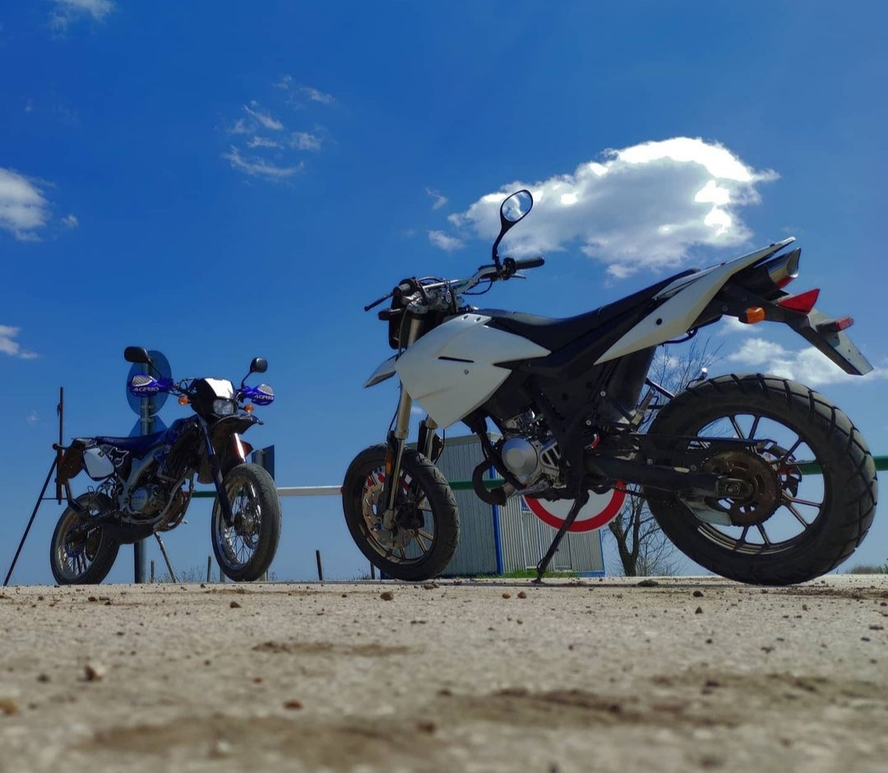
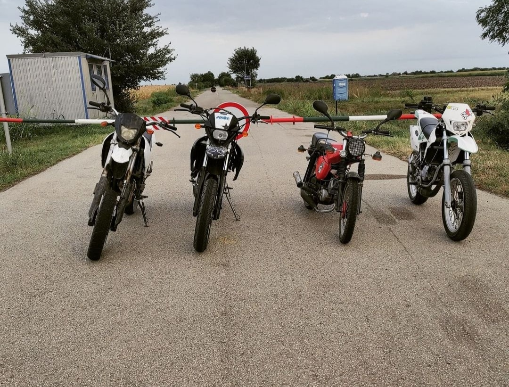

|

|
Nekem egy Generic Trigger SM50 nevű motorom van. "AM" kategóriás jogosítvánnyal vezethető.
A
motor 1 éve van
meg
de nem igazán használtam. Körülbelül Június végén rámjött valami, és hozzáfogtam szerelős videókat
nézni, néztem
apukámat, keresztapukámat ahogy szerelnek valamit, és utána már érdekelt a dolog.
Megkértem
apukámat, hogy
segítsen rendberakni a motort ő bele is egyezett. Megcsináltuk, kapott új alkatrészeket és azóta
működik.
A motorom teljesen gyári lett. Vagyis, annak nevezhető, mert márkás alkatrészeket vettem bele a
kínai helyett.
Én nagyon szeretem, nem egy erőgép, de ha meghúzom a gázt, megindul rendesen. Igazából rengeteg
pénzt igényel a
motorozás, de nagyon megéri szerintem. Hiába nevezik "kismotor"-nak ugyan úgy érdemes felvenni
normális motoros
ruhát, bukósisakot. Én elestem már párszor, néhánynak a helye is megvan még. Sok mindent megéltem a
motorommal
és nem áll szándékomban lecserélni még egy jó ideig. Amióta megvan körülbelül 3500 kilómétert
vezettem le vele. Teljesen hozzámnőtt ez a kis motor, szóval addig ameddig nem lesz autóm biztosan
rendben fogom tartani.
|

|